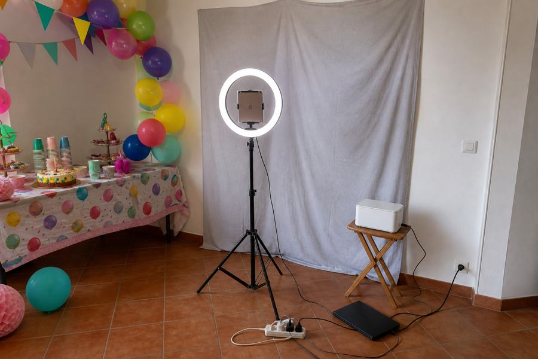
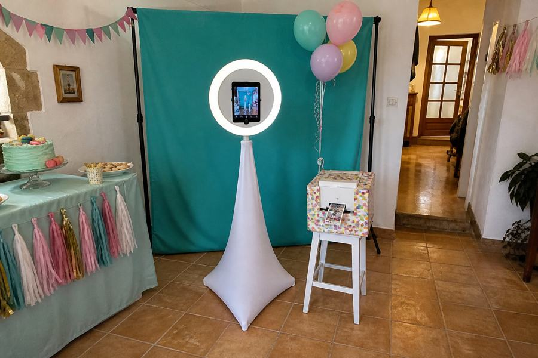

Кипр · детские праздники · pre-MVP
Ребёнок заходит собой, выходит героем — и уносит это в руках
Фотостойка без оператора: выбрал персонажа, сфотографировался, через 25 секунд забрал напечатанную карточку. Аниматор берёт её у меня за €100 за праздник, ставит родителю €180 и разницу оставляет себе.


Один снимок → шесть персонажей. Лицо, возраст и улыбка не трогаются: меняются только причёска, костюм и фон.
Что уже проверено
Не рассуждения — прогон настоящего пайплайна 25 августа 2026
Синтетический портрет ребёнка прогнали через gpt-image-2 в режиме редактирования, шесть архетипов, промпт с жёстким требованием сохранить лицо.
| Метрика | Результат |
|---|---|
| Время генерации | 22–30 секунд на кадр |
| Сохранение сходства | ребёнок узнаётся во всех шестилицо, возраст, улыбка не поплыли |
| Цена кадра | ≈ $0.05 |
| Отказы модерации | 1 из 6 в первом прогоне«танцор с мечом» — оружие рядом с ребёнком |
Побочная находка, важная для прода. При повторном прогоне тот же отклонённый промпт прошёл. Модерация вероятностная, а не детерминированная. Значит: убрать оружие из пресетов, заложить обязательный retry, держать второго провайдера наготове.
Рынок
Категория зрелая, детский сегмент — почти пустой
AI-фотобудки — сформировавшийся сегмент проката. Планшетные системы держат около 37% рынка по технологии, типовое время генерации у вендоров 30–60 секунд, операторы берут $400–900 за ивент.
| Игрок | Что даёт | Цена |
|---|---|---|
| Simple Booth HALO | iPad-будка, самый простой self-serve | софт $29–249/мес, железо $2500–4000, AI-кредиты $0.10 |
| LumaBooth | Windows и iPad, AI Portraits | $19.99–49.99/мес |
| aiphotobooth.eu | европейский SaaS-кабинет под AI-будку | €19 → €799/мес по кредитам |
| Snapbar, Chic Booth, Lucky Frog | US-операторы, продают как услугу | $400–900 за ивент |
Кипрский контекст: аниматор берёт €100–350 за час в Лимассоле, средний чек детского аниматора в Пафосе около €438, STEM-праздники от €300. Аддон за €100 встраивается в такой чек органично — это плюс 25–30% к их среднему счёту без единого лишнего часа работы.
Индустрия прямо пишет: очередь тормозят не вычисления, а непонимание — люди зависают, не зная, как начать и нормальное ли у них фото. Мы хотим работать без оператора, значит эту роль целиком берёт на себя интерфейс.
Где дыра
Три причины, по которым место свободно
Дети заблокированы
Google и OpenAI отклоняют обработку фото с несовершеннолетними на уровне API, и защита не отключается настройками. Весь SaaS-слой рынка построен на этих моделях — то есть детский праздник он обслужить не может.
Оператор всегда рядом
Рынок продаёт «будка плюс человек». Модель «привезли коробку, она сама работает три часа» встречается редко.
На Кипре пусто
Рынок детских праздников насыщен аниматорами, но AI-будок в выдаче не видно. Конкуренции по этому аддону практически нет.
Как устроена стойка
Одна сумка на колёсах, 12 кг, сборка за 10 минут без инструментов
Путь ребёнка
Шесть экранов, ни одного взрослого
Витрина
Экран крутит готовые карточки. Ребёнок видит результат до того, как решил участвовать — это снимает главный ступор.
Выбор
Шесть больших картинок, ни слова текста. Работает на любом языке зала — английском, греческом, русском.
Съёмка
Силуэт-рамка, кнопка активна только когда лицо в кадре. Отсчёт 3-2-1, серия из трёх кадров, лучший выбирается сам.
Ожидание
Двадцать пять секунд для ребёнка — вечность. Прогресс-бар и анимация, иначе он уйдёт.
Результат
Две кнопки: печать или переснять, один раз. Больше выборов не даём.
Печать
Карточка 10×15 выезжает в лоток. Автосброс через 15 секунд — следующий.
Из чего собирается
Четыре готовых предмета. Ни одного самодельного, фанеру не пилим
| Предмет | Что берём | € | Вес |
|---|---|---|---|
| Стойка, свет и держатель | кольцевой свет 18″ на штативе с держателем под планшет — три вещи в одной покупкеколонна, свет и крепление сразу | 50–70 | 3.5 кг |
| Фон | складной поп-ап 150×200, раскрывается пружиной, складывается в диск 70 см | 60–80 | 1.5 кг |
| Принтер | Canon SELPHY CP1500 и картридж на 108 карточек | 140+32 | 1.3 кг |
| Печатный узел | старый ноут, который уже есть — принтер к нему по USBсвоя батарея, лежит внутри тумбы с закрытой крышкой | 0–20 | 2 кг |
| Подставка под принтер | складной табурет: лоток должен быть на 50–60 см, чтобы ребёнок доставал карточку не приседая | 15–25 | 2 кг |
| Транспорт | сумка на колёсах | 25–35 | 1.5 кг |
| Итого | iPad и ноут свои, окупается за 4 праздника | ≈ 330 | 12 кг |
Свет и есть стойка
Кольцевой свет на штативе закрывает колонну, освещение и крепление планшета одной покупкой и складывается в свой же чехол. Планшет встаёт в центр кольца — свет бьёт ровно в лицо, ровно то, что нужно генерации.
Аттракцион делает фон
«Это фотозона» считывается по фону и свету, а не по коробке вокруг планшета. Печатный фон с нашими персонажами за €70 даёт весь вау-эффект, который дал бы корпус за €550.
Штатив надо утяжелить
Дети виснут на всём. Мешок с песком на ноги штатива — €10, или пакет камней с пляжа за ноль. Без этого стойка поедет на первом же празднике.
Сборка на месте — четыре движения. Раскрыть фон, раскрыть штатив на 120 см и вставить планшет, поставить табурет с принтером, воткнуть удлинитель.
Как это выглядит на самом деле
Один и тот же комплект, разница — €70 на маскировку


Два вывода из этой пары. Первое: чехол на штатив делает больше, чем всё остальное вместе — он убирает саму «треногость». Второе: цвет фона бесплатен. Серый и цветной стоят одинаково, но серый читается как студийное оборудование, а цветной — как часть праздника. На этом экономить нельзя даже случайно.
Честная оценка нижней картинки: это самодельная фотобудка. На домашнем детском празднике этого достаточно. Продуктом она становится на следующей ступени — с промо-стойкой:

Почему печатает не планшет
Проверено по документации и репортам разработчиков, а не предположено
Логично спросить: зачем отдельный компьютер, если есть iPad, а SELPHY умеет AirPrint. Ответ: iPad не может печатать молча — а будке без оператора нужна именно молчаливая печать: ребёнок жмёт кнопку и забирает карточку, без диалогов и выбора принтера.
| Путь | Что происходит |
|---|---|
| Веб-приложение в Safari | с iOS 10.3.3 автоматический вызов печати блокируется: «This website was blocked for automatic printing». Тупик |
| Нативное iOS-приложение | метод прямой печати существует, но разработчики стабильно сообщают: всё равно всплывает окно «Printing to…» с кнопкой отмены. Плюс на iOS 16 после первой печати следующие выходят пустыми до перезапуска |
| Chrome в киоск-режиме на компьютере | флаг тихой печати даёт настоящую печать без диалогов. Работает |
Но Raspberry покупать не надо. Роль печатного узла закрывает старый ноут, который уже есть: лежит внутри тумбы с закрытой крышкой, принтер к нему по USB — значит печать не зависит от Wi-Fi вообще. И у ноута своя батарея, то есть он же закрывает питание. Pi за €70 имеет смысл потом, когда захочется забрать ноут обратно.
Интернет нужен только планшету — отправить кадр на генерацию. На праздниках он обычно есть; страховка на случай мёртвого Wi-Fi у хозяев — телефон в режиме модема, ноль евро и тридцать секунд.
Чтобы не выглядело как ремонт
На празднике всё украшено — набор вещей с проводами туда не встаёт
Решается не строительством и не покупкой готовой тумбы. Выставочная стойка — это коробка плюс печатная кожа. Обе части на Кипре стоят кратно дешевле, чем готовое изделие из Британии с доставкой, НДС и растаможкой.
| Купить готовое | Собрать | |
|---|---|---|
| Тело | — | складной стол-чемоданскладывается пополам, ручка, ~5 кг €35–55 |
| Кожа | — | стрейч-чехол на 4 стороны с печатьюу местного печатника €60–120 |
| Итого | €400–500 с доставкой на Кипр | €95–175 |
Четырёхсторонний стрейч-чехол — ровно то, чем на выставках закрывают стол: обтягивает столешницу и все четыре стороны до пола. Под ним исчезают принтер, ноут, провода и удлинитель. Это буквально функция промо-стойки, только за четверть цены. Столешница при этом больше, а высота 74 см вместо 100 — для детей лучше: лоток выдачи ровно на уровне рук.
Печать заказывать на Кипре и всё сразу. Местные печатают на ткани до 3.2 м без швов — Print Angels в Лимассоле, Zonari в Пафосе, Cyprus Printing Center. Один макет, один поставщик, один заказ: фон, чехол на стол и указатель. Дешевле, чем возить готовое, и правится за день, если персонажи поменяются.
Промежуточный шаг за €30: не печатать сразу, а взять однотонный стрейч-чехол — он уже прячет всё под столом и выглядит опрятно. Печать заказывать после того, как персонажи финализированы и организатор сказал «беру».
| Ступень | € | Как читается |
|---|---|---|
| Как есть | 0 | стройка в углу |
| Скрим на штатив и цветной фон | 70 | самодельная фотобудка |
| + стол с однотонным чехлом | ≈105 | опрятная фотозона |
| + печать чехла и фона | ≈200 | продукт |
| Покупная выставочная стойка | 400–500 | то же самое, что за €200 |
Покупная промо-стойка не нужна вообще. Она не даёт ничего сверх стола с печатным чехлом — кроме веса и счёта на растаможку.
Принтер, ноут, питание и все провода уезжают внутрь. Снаружи — один объект с нашей графикой и карточка, которая выезжает на столешницу. Штатив исчезает вообще: планшет ставится на топ на коротком кронштейне, и экран оказывается на 115 см — ровно уровень глаз ребёнка 5–10 лет. Свет — компактное кольцо на струбцине.
Провода можно убрать полностью. SELPHY потребляет менее 60 Вт и поддерживает штатный аккумулятор — 72 карточки с одного заряда, это больше, чем весь праздник. Ноут работает от своей батареи, планшет добирает повербанком. Ни одного провода к розетке — и это не только внешний вид: шнур по полу там, где бегают дети, это то, обо что споткнутся.
Если бюджет пока не тянет стойку, 80% визуального мусора убирается за €70: чехол-скрим на штатив (диджейский, с отверстием для вывода кабеля, €25–35), принтер в декоративной коробке с вырезом под лоток вместо табурета (€20), один плоский удлинитель в кабель-канале (€20).
Графика важнее каркаса
Печатная обтяжка с теми же персонажами, что на карточках, превращает набор вещей в аттракцион. €150 на печать делают больше, чем €550 на металл.
Пусть организатор украсит
Он всё равно приезжает с шарами и тематическим декором. Стойка, к которой можно привязать его шары, перестаёт быть чужой техникой и становится частью его оформления. Стоит ноль — и делает его соавтором.
Когда всё-таки нужен корпус
Только на стационарной точке в отеле или ТЦ
Там ящик стоит неделями: его никто не собирает заново, зато его трогают сотни детей, и он должен выглядеть мебелью, а не штативом с планшетом. Тогда — либо готовый алюминиевый shell за €400–550, либо чертёж кипрскому столяру: отдаёшь размеры в миллиметрах, получаешь распиленные панели за €150–250, собираешь шуруповёртом за вечер. Своими руками не пилим — нет мастерской, и экономия сотни евро не стоит выходных.
Что если сломается. Нет интернета — стойка молча переходит на локальную обработку без ИИ, карточка выходит всё равно. Дети жмут всё подряд — один отпечаток на сессию, пауза 20 секунд, лимит на праздник. Меня нет рядом — вижу телеметрию: остаток бумаги, процент успешных генераций, жива ли будка.
Экономика
Цифры подпёрты прайсами кипрских операторов, а не взяты с потолка
Сколько стоят сопоставимые аддоны
Живой прайс KIDDOM, Лимассол — тот самый сегмент, куда заходим
| Их услуга | Цена | Что это по сути |
|---|---|---|
| Аквагрим | €70 / 30 мин | ближайший аналог: персональное превращение, которое ребёнок уносит на себе |
| Мастер-классмыло, свечи, браслеты | €100 / 10 детей | аналог по формату: станция, через которую дети проходят по очереди |
| Маскот, ростовая кукла | €100 / 25 мин | |
| Фотограф | €150 / час | |
| Персональная фотозона | от €450 | |
| Дополнительный аниматор | €50 / час | |
| Шоу: пузыри, крио, тесла, дискотеки | €200–450 / 30 мин | |
| Пакеты праздника на 10 детей | €450 → €1500 | 2.5–3.5 часа |
€100 родителю — это было ниже рынка. За те же деньги аквагримёр отрабатывает 45 минут. Будка работает весь праздник, обслуживает всех детей и отдаёт физический артефакт. Реалистичный розничный ценник — €150–200: дешевле часа фотографа, кратно дешевле фотозоны, дороже мастер-класса при несопоставимо большем времени работы.
Сколько принято оставлять посреднику
Два разных мира, которые постоянно путают
| Модель | Кто так работает | Доля посредника |
|---|---|---|
| Комиссия за рекомендациюсвёл — получил процент | event-планировщики, свадебные агентства | 10–20% в люксе до 40% |
| Наценка на подрядчикаперепродажа со своей маржой | агентства, нанимающие исполнителей | 25–50% |
| Агентская комиссия с исполнителя | talent и booking-агентства | 10–25% |
| Реселлер фото-сервисов | Eventiere и аналоги | 15–25% |
| Русскоязычные детские агентства | referral-схемы | 30–40% |
Пятьдесят на пятьдесят — это верхняя граница агентской жадности, а не норма. Для подрядчика, который приезжает со своим оборудованием и своей технологией, посредник оставляет себе 20–35%. Оговорка в обе стороны: наш организатор делает больше, чем «свёл» — он везёт, ставит и присматривает. Поэтому чистые 15% тут занижены. Справедливая вилка — 25–35% розничной цены.
Какую схему предлагать
Не процент, а фиксированная оптовая цена
Организатор платит мне фикс и сам ставит ценник родителю, забирая разницу.
«Будка стоит тебе €100 за праздник. Родителю продавай за сколько хочешь — у тебя в прайсе аквагрим стоит €70 за полчаса, а это работает весь праздник и каждый ребёнок уносит карточку. Ставь €180 — €80 твои.»
Почему фикс, а не половина от чека: не надо проверять, за сколько он реально продал — иначе конфликт на ровном месте. Организатор сам управляет маржой, и это привычная ему модель наценки на подрядчика. Продаст за €250 — его право и его заработок, мотивация двигать цену вверх, а не вниз. И заодно выстраивается нормальная оптово-розничная структура, которая потом переносится на отели без переписывания договорённостей.
Вилка для торга: открываем на €100 опта, пол — €80, потолок — €130 для премиального организатора, который продаёт от €250.
Один праздник
Железо окупается за пять праздников вместо тринадцати. Но вся экономика держится на том, что коробку возит организатор: если вожу я — минус бензин и полтора часа, остаётся около €65 и убитый выходной.
| Праздников в месяц | Было: €50, пополам | Стало: €100 опта |
|---|---|---|
| 8 | €264 | €672 |
| 15 | €495 | €1 260 |
| 20 | €660 | €1 680 |
Честно про потолок. Даже с исправленной ценой домашние дни рождения не дают €10 000 в месяц — но перестают быть подработкой. Полторы тысячи с одного ящика при полной загрузке — это база, на которую ставится второй ящик и делается заход в отели.
Тот же ящик и тот же софт на другой площадке стоят в три-шесть раз дороже:
| Канал | Чек | Почему |
|---|---|---|
| Отели и kids clubПафос, Лимассол | €300–600 за вечер или €500–900/мес | дети каждый день, платит юрлицо, логистики нет вообще |
| ТЦ и детские центры | revenue share | работает 30 дней в месяц, а не 4 |
| Корпоративы, family day | €400–900 за ивент | бюджет корпоративный, торга почти нет |
| Софт другим операторам будок | €99–199/мес + кредиты | у них детский сегмент закрыт политикой Google и OpenAI — продаём то, чего они не могут купить |
Что закрывается только разговором
Три цифры, которых нет в публичных прайсах
Закупка аквагримёра
Розница €70 за полчаса известна, внутренняя закупка — нет. Прямой вопрос организатору: «за сколько ты берёшь аквагримёра на праздник?» Эта цифра закрывает торг окончательно.
Кто везёт
Вся экономика держится на том, что коробку возит организатор. Откажется — net падает с €84 до €65 и уходит выходной.
Премиум или массовый
KIDDOM — премиальный русскоязычный оператор Лимассола. В Пафосе и в грекоязычном сегменте цены могут быть заметно ниже.
Риски
Что реально может убить проект
Фильтр на детские лица
Прямой Gemini API отклоняет фото с несовершеннолетними, и это не отключается настройками разработчика; за систематические нарушения отзывают доступ. У OpenAI модерация мягче и вероятностная. Страховка — open-weight модель на своём GPU: Qwen-Image-Edit под Apache 2.0, коммерция разрешена. FLUX Kontext dev в прод нельзя — лицензия non-commercial.
Чужая интеллектуальная собственность
Никаких имён и персонажей чужих мультфильмов ни в интерфейсе, ни в промптах, ни в маркетинге. Только свои архетипы по мотивам жанра. Это защищает и организатора, который ставит будку у себя на празднике.
GDPR и детские данные
Изображение становится биометрией только если применяется распознавание. Поэтому его не делаем вообще — только детекция лица для кадрирования. Фото удаляется после печати, цифровая копия живёт 24 часа, согласие родителей организатор берёт при бронировании.
Дети и физика
Устойчивая база, кабели внутри корпуса, никаких острых кромок и стекла, планшет в антивандальном креплении.
План пилота
Две недели, меньше €400, железо покупаем последним
-
Спрос без продукта
Напечатать шесть карточек в обычном фотосалоне — принтер для этого не нужен — и прийти с ними физически к пяти организаторам детских праздников. Вопрос не «нравится?», а «возьмёшь на три ближайших праздника, продашь родителям за €100 и отдашь мне половину? Возить и ставить — ты».
Гейт: двое из пяти называют конкретные даты
-
Живой праздник вручную
Никакой автономности: приезжаю с ноутбуком, генерю руками. Цель не заработать, а замерить — сколько детей подошло, сколько раз ребёнок завис и позвал взрослого, восторг у родителей или неловкая пауза, сколько секунд ожидания ребёнок терпит. Видео с этого праздника станет промо для отелей.
-
Автономная стойка
Собираем железо на €345 и доводим прототип до боевого.
Готово, когда трое детей подряд проходят путь до карточки в руках без единого вопроса взрослому, а я стою в десяти метрах и не вмешиваюсь. И когда я выдёргиваю интернет — карточка всё равно выходит.
-
Пять праздников подряд
Метрики решения: доля детей, дошедших до печати; процент успешных генераций; сколько раз организатор обратился ко мне за праздник — цель ноль; заказал ли повторно. Только после этого идём в отели с портфолио.
Чего сознательно не делаем в первой версии: оплату картой в будке, облачную галерею, шеринг в соцсети, мобильное приложение, свободный ввод промптов, видео, вторую будку, брендирование под заказчика.
Прототип будки
Пройди путь ребёнка целиком: выбор героя, отсчёт, превращение, печать. Внутри вторая вкладка — схема стойки и текст оффера организатору.